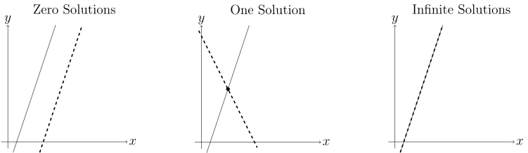
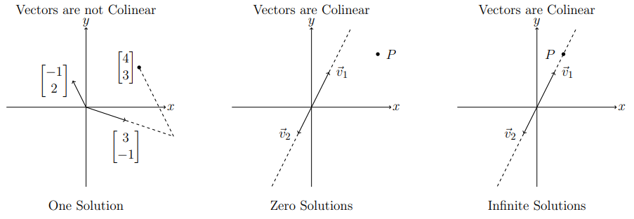
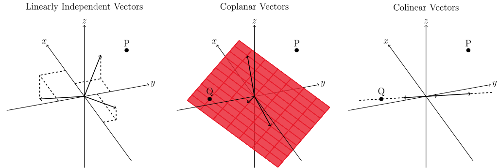

Table of Contents
Linear Algebra

NARROW DISPLAY WARNING
You are most likely using a tablet or mobile device in portrait orientation. This website is best viewed using a typical computer screen with the browser window maximized.
Viewing this website in portrait orientation can cause problems with equations being longer than the screen width (you can scroll to the right), images being poorly sized, and the font size of maths text being much smaller than regular text. If your only option is a tablet or mobile device, your viewing experience will be better if you view this website in landscape orientation. You might need to refresh the page to fix any problems after rotating.
Systems of linear equations can be interpreted as intersections of lines and planes and higher-dimensional linear objects, but another way is to interpret solutions of systems of linear equations as a linear combination of vectors.
Interpreting the solutions of two linear equations in $x$ and $y$ as intersections of lines in the $xy$-plane, there are three possible outcomes.
Example systems for each case are below.
\begin{equation} \begin{matrix} 3x-y=\phantom{-}1 & \quad & 3x-y=1 & \quad & \phantom{-}3x-\phantom{2}y=\phantom{-}1 \\ 3x-y=-2 & \quad & 2x+y=4 & \quad & -6x+2y=-2 \end{matrix} \end{equation}Writing the first case as augmented matrix.
\begin{equation} \left[ \begin{matrix} 3 & -1 \\ 3 & -1 \end{matrix} \left| \begin{matrix} 1 \\ -2 \end{matrix} \right. \right] \end{equation}There's no way for $3x-y$ to equal $1$ and $-2$ simultaneously, meaning there are zero solutions to this system of equations. That shows itself in the augmented matrix with coefficient rows on the left side of the vertical bar being exactly the same, but the the constant rows on the right side of the vertical bar are not.
If the augmented matrix is row reduced,
\begin{equation} R_{1}+(-1)R_{2}\rightarrow R_{2} \quad \left[ \begin{matrix} 3 & -1 \\ 0 & 0 \end{matrix} \left| \begin{matrix} 1 \\ 3 \end{matrix} \right. \right] \end{equation}The bottom row requires the eqatation $0x+0y=3$, which is impossible. Since there is no $(x,y)$ pair that satisfies both equations, there are zero solutions to this system of equations.
Writing the second case as augmented matrix.
\begin{equation} \left[ \begin{matrix} 3 & -1 \\ 2 & 1 \end{matrix} \left| \begin{matrix} 1 \\ 4 \end{matrix} \right. \right] \end{equation}If you wrote the equations as $y=mx+b$, the slope $m$ in each equation would be different, so they would have to intersect at some point. However, you can get the same result with less work by row reducing.
\begin{equation} R_{1}+(-3/2)R_{2}\rightarrow R_{2} \quad \left[ \begin{matrix} 3 & -1 \\ 0 & -5/2 \end{matrix} \left| \begin{matrix} 1 \\ -5 \end{matrix} \right. \right] \end{equation}The second row is $-5/2 y = -5$ can be solved, then the first row can be solved. There is exactly one solution to this system of equations.
Writing the third case as augmented matrix.
\begin{equation} \left[ \begin{matrix} 3 & -1 \\ -6 & 2 \end{matrix} \left| \begin{matrix} 1 \\ -2 \end{matrix} \right. \right] \end{equation}This is similar to the first case with zero solutions, except this time the entire bottom row cancels out after row reduction.
\begin{equation} R_{1}+(1/2)R_{2}\rightarrow R_{2} \quad \left[ \begin{matrix} 3 & -1 \\ 0 & 0 \end{matrix} \left| \begin{matrix} 1 \\ 0 \end{matrix} \right. \right] \end{equation}The second row is $0x+0y = 0$, which is always true. The second row is just the first row multiplied by $-2$, meaning they described the same line, so any solution to the first row will automatically be a solution to the second row. Then there's an infinite number solutions because there's an infinite number of points on the line.
There are a lot more cases when interpreting the solutions of three linear equations in $x$,$y$, and $z$ in 3D space.
Despite there being many more ways for three planes to orient themselves, there are still only three possible solution types.
Despite so many cases, the row reduced augmented matrices will look pretty much the same. A row with $0x+0y+0z=$ not zero is impossible and have zero solutions, infinite solutions will have rows full of zeros, and one solution will have a non-zero diagonal coefficients with a unique solution.
Systems of linear equations can also be interpreted as vectors by breaking up the coefficient matrix in columns times unknowns $c_{1}$ and $c_{2}$. (The row interpretation using $x$ and $y$ had to change to $c_{1}$ and $c_{2}$ for the column interpretation since the vectors have $x$ and $y$ components.)
\begin{equation} \begin{matrix} 3c_{1}-c_{2}=4 \\ -c_{1}+2c_{2}=3 \end{matrix} \qquad \begin{bmatrix} 3 & -1 \\ -1 & 2 \end{bmatrix}\begin{bmatrix} c_{1} \\ c_{2} \end{bmatrix} = \begin{bmatrix} 4 \\ 3 \end{bmatrix} \end{equation} \begin{equation} \begin{bmatrix} 3 \\ -1 \end{bmatrix}c_{1} + \begin{bmatrix} -1 \\ 2 \end{bmatrix}c_{2} = \begin{bmatrix} 4 \\ 3 \end{bmatrix} \end{equation}The solution to this system is $c_{1} = \dfrac{11}{5}$ and $c_{2} = \dfrac{13}{5}$, meaning
\begin{equation} \begin{bmatrix} 3 \\ -1 \end{bmatrix}\frac{11}{5} + \begin{bmatrix} -1 \\ 2 \end{bmatrix}\frac{13}{5} = \begin{bmatrix} 4 \\ 3 \end{bmatrix} \end{equation}The image on the left below illustrates adding the vectors together to arrive at the RHS vector.
The middle and right illustrations are when the columns of the coefficient matrix end up being multiples of each other, which means the vectors are colinear. In that case, there can be an infinite number of solutions if the RHS point $P$ lies in the direction of the vectors, and zero solutions if the RHS point $P$ lies off the direction of the vectors.
This vector interpretation isn't any easier to understand for two equations and two unknowns, but will be for larger systems.
Making a linear combination of 3D vectors turns out to be a lot easier to visualize than the intersection of plane equations.
\begin{equation} \begin{matrix} 3c_{1}-2c_{2}+c_{3}=1 \\ 4c_{1}+c_{2}+c_{3}=2 \\ -c_{1}+3c_{2}-c_{3}=3 \end{matrix} \qquad \begin{bmatrix} 3 & -2 & 1 \\ 4 & 1 & 1 \\ -1 & 3 & -1 \end{bmatrix}\begin{bmatrix} c_{1} \\ c_{2} \\ c_{3} \end{bmatrix} = \begin{bmatrix} 1 \\ 2 \\ 3 \end{bmatrix} \end{equation} \begin{equation} \begin{bmatrix} 3 \\ 4 \\ -1 \end{bmatrix}c_{1} + \begin{bmatrix} -2 \\ 1 \\ 3 \end{bmatrix}c_{2} + \begin{bmatrix} 1 \\ 1 \\ -1 \end{bmatrix}c_{3} = \begin{bmatrix} 1 \\ 2 \\ 3 \end{bmatrix} \end{equation}The vectors can be linearly independent, coplanar, and colinear. (There is a silly case where all the vectors are $\vec{0}$.)
For linearly independent vectors, every point $P$ in 3D space can be solved for. For coplanar vectors, points $Q$ that lie in the plane containing the vectors can be solved for, but all points $P$ outside the plane have no solution. For colinear vectors, points $Q$ can be solved for on the line containing the vectors, but almost every other point $P$ in 3D space not on the line can't be solved for.
The same ideas from 2D and 3D can be applied to 4D or any dimensional space.
\begin{equation} \begin{matrix} c_{1}+2c_{2}+3c_{3}+4c_{3}=5 \\ 6c_{1}+72c_{2}+8c_{3}+9c_{3}=10 \\ 11c_{1}+12c_{2}+13c_{3}+14c_{3}=15 \\ 16c_{1}+17c_{2}+18c_{3}+19c_{3}=20 \end{matrix} \qquad \begin{bmatrix} 1 & 2 & 3 & 4 \\ 6 & 7 & 8 & 9 \\ 11 & 12 & 13 & 14 \\ 16 & 17 & 18 & 19 \end{bmatrix}\begin{bmatrix} c_{1} \\ c_{2} \\ c_{3} \\ c_{4} \end{bmatrix} = \begin{bmatrix} 5 \\ 10 \\ 15 \\ 20 \end{bmatrix} \end{equation} \begin{equation} \begin{bmatrix} 1 \\ 6 \\ 11 \\ 16 \end{bmatrix}c_{1} + \begin{bmatrix} 2 \\ 7 \\ 12 \\ 17 \end{bmatrix}c_{2} + \begin{bmatrix} 3 \\ 8 \\ 13 \\ 18 \end{bmatrix}c_{3} + \begin{bmatrix} 4 \\ 9 \\ 14 \\ 19 \end{bmatrix}c_{4} = \begin{bmatrix} 5 \\ 10 \\ 15 \\ 20 \end{bmatrix} \end{equation}Even though it can't be graphed since it's higher than three dimensions, the vectors are either linearly independent or not. If the vectors are linearly independent, then there is always a solution. If the vectors are not linearly independent, then there will either be zero solutions or infinite solutions.